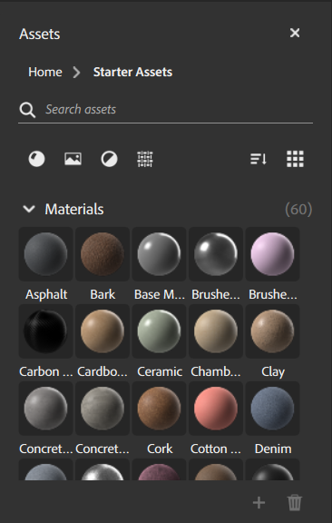

The Assets panel holds assets that you can use to build your creations. Sampler includes a collection of materials, filters, and texture generators to help you get started.
The Assets panel has some controls to help organize and find assets:
To add your own assets to the assets panel, click the + at the lower right of the Assets panel. Browse to the location of your asset, select it, and click Open. You can remove custom assets from the Assets panel by dragging them over the trash can.
Only custom assets can be deleted in the Assets panel. It is not possible to delete Sampler's default assets.